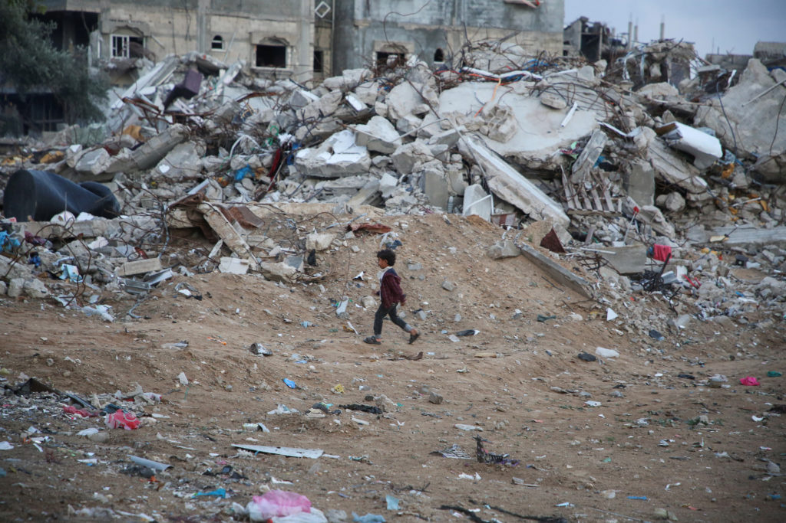
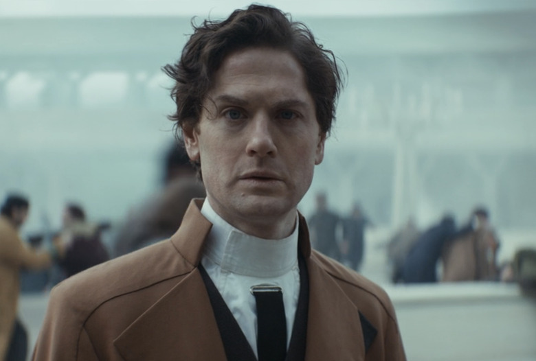

under pressure
january 26th 2026

every single day seems to get worse, and worse and worse. the 24 hour news cycle has destroyed our sleep schedules, keeping us perpetually awake and aware of everything happening around us. we are constantly being worked harder and harder, and it's never enough. when will it end? how long can we keep this up?
i feel constantly stressed and anxious about the way the world is going. i find it hard to find the motivation to do anything, some days i can't even get out of bed. everything feels hopeless and there's no way out. i know i'm not the only one.
we are seeing people starve because they can't afford to eat. we see people who can't afford to pay rent, who can't get a job due to various circumstances of their own. we're seeing people be opressed, so far that they are being displaced or killed in a genocide.
the people in charge don't seem to care. i'd say they don't see what is happening, but it would be hard to miss. they are complicit in the death of millions of people, complicit in the breaking of international law, and complicit in the violation of human rights.
allowing trump to kidnap maduro should have been the last straw, we should have cut all ties with the united states, and applied massive sactions to them. instead, we have a spineless mollusc that is willing to do anything to keep sucking his dick, WHO USED TO BE AN ICC LAWYER NONE THE LESS, who decided that this is fine. there was nothing wrong with what trump did. and then you have people telling us that it's fine, why should we care? why shouldn't we allow them to do this? those same people would tell us that if trump invaded our country overnight, killed innocent civilians, and then kidnapped the head of state, it's all fine, we shouldn't have been in his way.
and now, we see the acceptance of public executions. the death of renee good was a tradgedy, no matter if you believe she was trying to run her over or not. she should never have been shot 3 times in the face. and one killing could have been passed off as an extreme mistake, just one ICE officer that was unhinged. but two? that's a culture problem. these people are modern-day nazis, and they don't care who gets in their way.
nigel farage wants to bring much of this to the UK. he wants to keep us all working of the rest of our lives, being squeezed so tight that there's nothing we can do. the more exhausted we are, the better. he's not alone there; i'm feeling the squeeze already in my job. cutting hours, reducing number of staff, increasing the workload, and keeping the pay as minimal as they can.
why am i supposed to believe that all my problems stem from immigration? we are all human. we are all looking for a better life. it is primarily our fault that people have to flee their countries. we cannot stop outselves from causing disruption in the middle east, we believe that is should belong to us, but to what end? for what purpose? to serve as a playground for the rich and powerful?
we see these stories told in modern media; there are people that will watch star wars: andor and tell you that this isn't real, and that it's just a story, all fiction. there are masses of people who are not aware of anything around them, or are too ignorant to care. they have no compassion, no empathy, no understanding of the world around them. they are not aware of the suffering of others, and they are not aware of the suffering of themselves.
it's hard to not feel like a radical, when the only solutions in sight are extreme. we are seeing the rise of facism everywhere, especcially all over the UK. elon musk owns one of the largest social media platforms, and uses it to spread his messages of hate and diviision. the news tells us that innocent children were a threat to IDF solider's safety.
i cannot imagine a life for my children, let alone a good life for myself. how do we get out of this? how do we convince each other that all we have is each other?
love is such an old fashioned word. love dares us to care for the people on the edge of the night. love dares you to change our way of caring about ourselves.
love is all we have left.